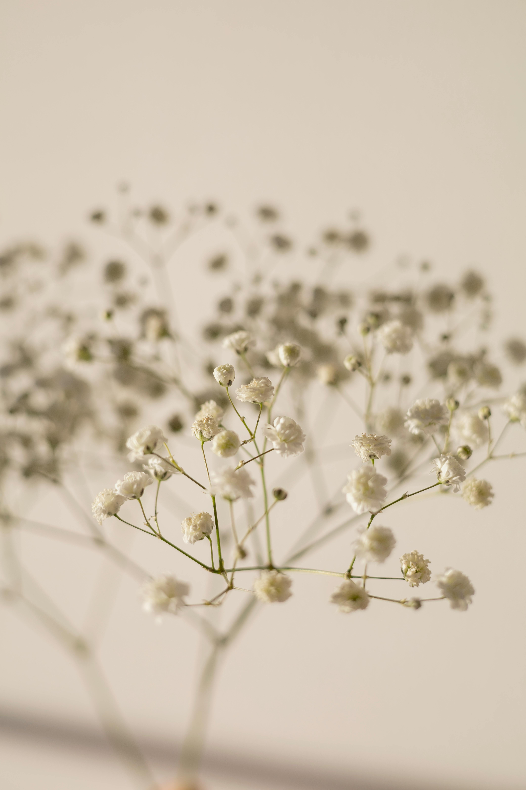
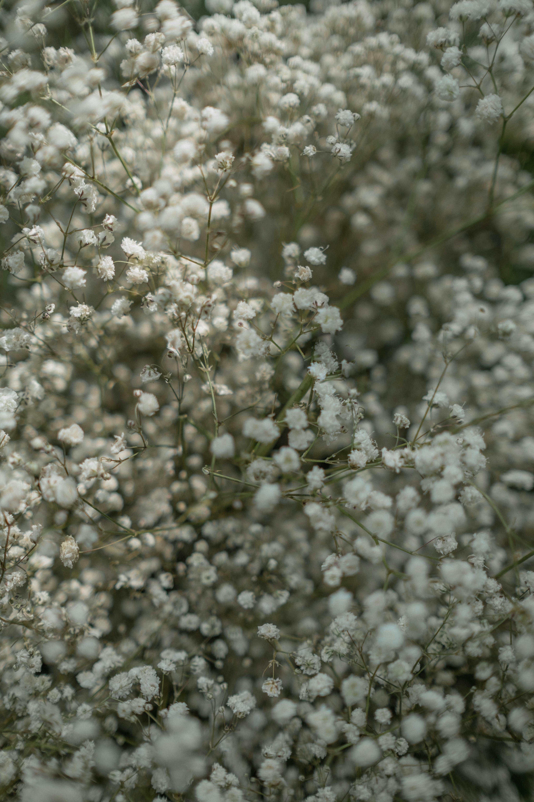
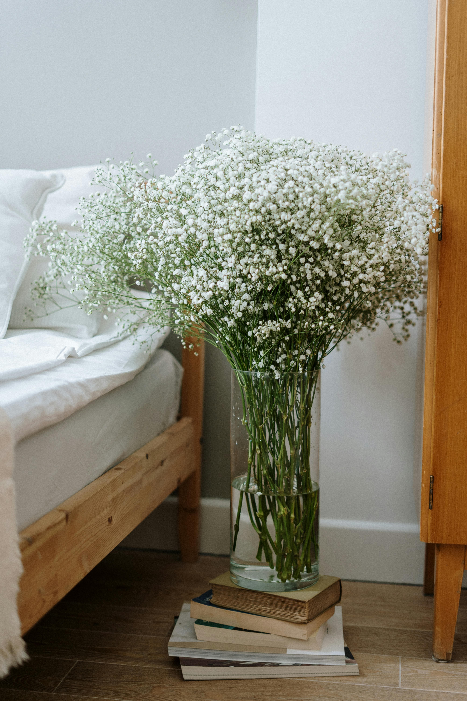

Baby's breath, known scientifically as Gypsophila, is a genus of delicate, airy flowers native to Europe, Asia, and parts of northern Africa. Most commonly associated with florists' bouquets, especially as filler flowers, baby's breath is beloved for its small, white or pink star-shaped blooms and cloud-like appearance. The flowers naturally grow in rocky and sandy soils, especially those with a high gypsum content, which is reflected in the genus name Gypsophila—meaning "lover of gypsum." This soil composition is common in parts of central and eastern Europe, where baby’s breath originates and thrives in wild landscapes.
Baby’s breath is cultivated in various parts of the world today, with large commercial farms in places like the Netherlands, Israel, and parts of South America, where the flower is grown specifically for the floral industry. The plant is hardy and drought-resistant, making it well-suited to dry, well-drained areas that mimic its natural habitat. It grows best in open, sunny fields or gardens with ample sun exposure, as shade can cause the plant to become leggy and prevent it from producing as many blooms.
In its natural habitat, baby’s breath grows as a perennial wildflower, particularly well-adapted to cold winters and dry summers. In these climates, the plants develop deep roots to reach water sources in the subsoil, allowing them to survive in regions with limited rainfall. As an invasive species in some parts of North America, baby’s breath can spread aggressively, especially in prairie and dune ecosystems, where it competes with native plants. Efforts are sometimes made to control its growth in these areas, as it can alter local biodiversity and the composition of native plant communities. Despite these challenges, baby’s breath remains a highly popular flower worldwide, symbolizing purity, innocence, and enduring love.
Baby’s breath has a range of uses, especially in floristry, where it is prized for its light, airy appearance and ability to complement larger blooms. It is most commonly used as a filler flower in arrangements, where clusters of small white or pink blossoms add texture and fullness without overwhelming the main flowers. Baby’s breath is especially popular in wedding bouquets and centerpieces, symbolizing purity, innocence, and everlasting love, which aligns with the sentimental themes of weddings and other ceremonies. It is also a staple in many floral arrangements, from classic red rose bouquets to rustic wildflower displays, adding a soft and romantic touch.
In addition to wedding arrangements, baby's breath is used in various other celebrations, including baby showers, birthdays, and anniversaries, often symbolizing joy and new beginnings. Its versatility allows it to be styled to suit many themes, from elegant to vintage or bohemian, and it’s often dyed in different colors or glittered for unique, trendy looks. Dried baby’s breath is another popular option, as it retains its shape and delicate appearance long after being preserved, making it ideal for long-lasting floral arrangements and crafts. Dried stems are commonly used in wreaths, garlands, and home decor because they add a rustic, minimalist touch and last without requiring water or extensive care.
Beyond its decorative uses, baby’s breath has practical applications in certain industries. The plant’s roots contain saponins, which are natural compounds with soap-like qualities. In some regions, these saponins are extracted and used in cosmetics or as a natural foaming agent in food and beverages. Furthermore, the medicinal properties of baby’s breath are under investigation, as some studies have found that saponins may enhance the effectiveness of treatments, particularly in targeting cancer cells when used in conjunction with certain therapies. Although most commonly recognized for its beauty and decorative appeal, baby’s breath’s versatility extends well beyond the floral shop, finding its way into various products and industries worldwide.
I draw flowers, Flowers are my comfort. but, eventually Flowers wilt. If they wilt, they die. So does my comfort. Oh but what's this? a new comfort? but its a girl, does she like flowers? but she is a flower, a flower that will never wilt a flower that will forever be my comfort.
— from Application for Release from the Dream